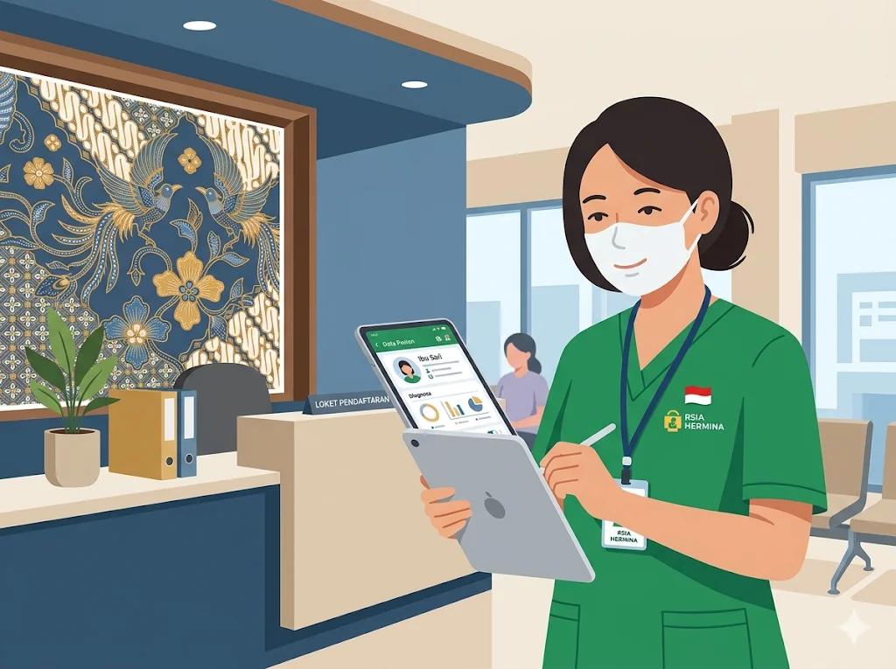
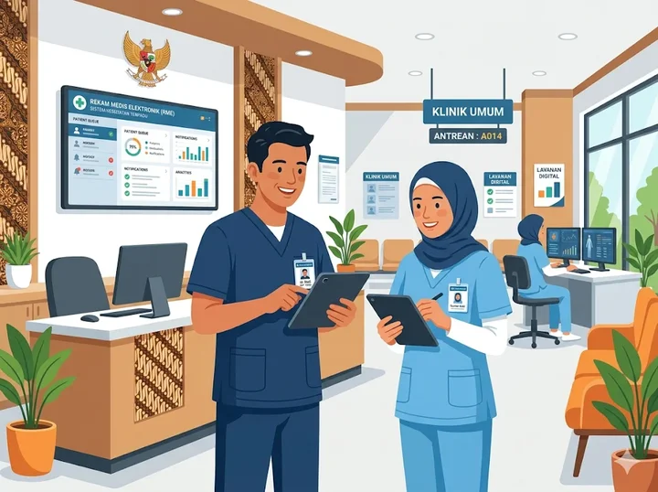
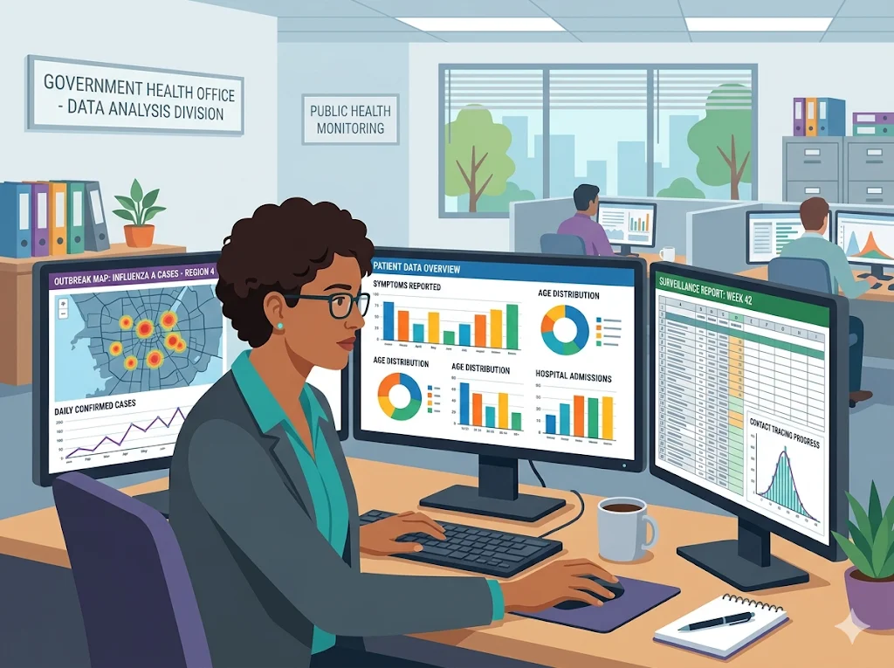
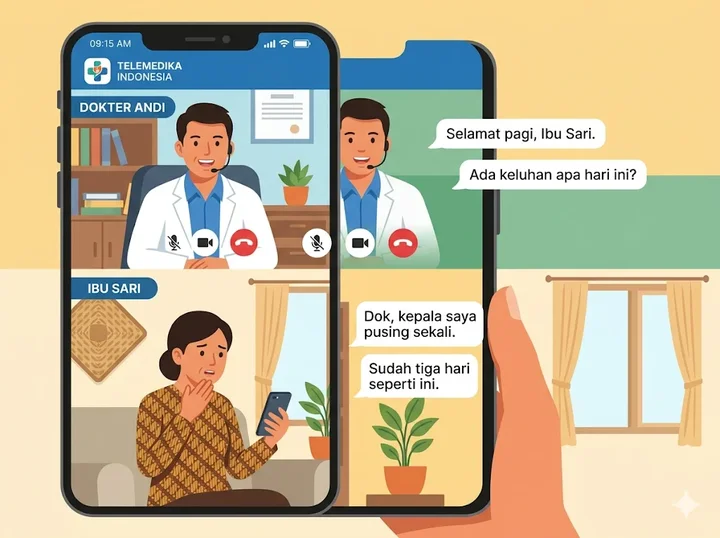
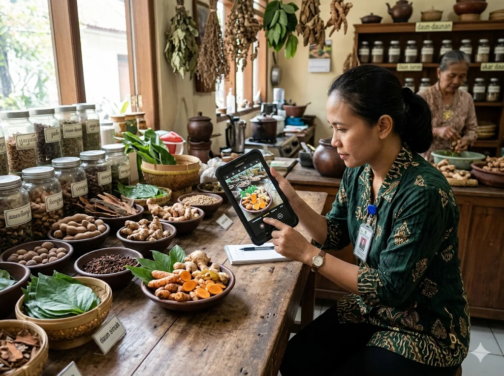
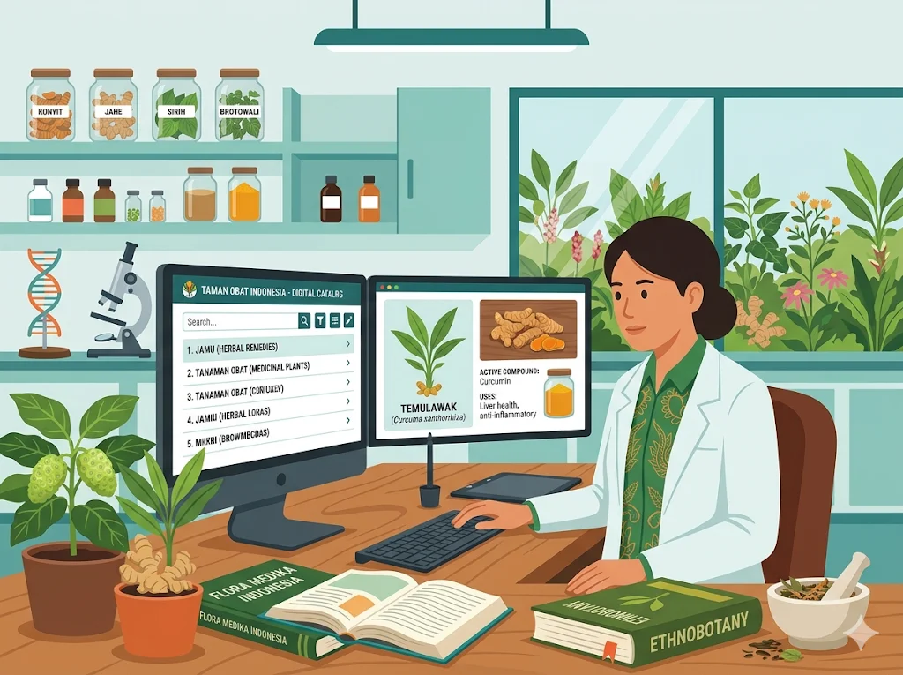
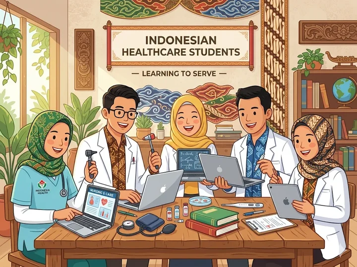

Setelah mempelajari materi ini, kamu akan bisa:
Apa saja yang akan kita pelajari?
Profesi informatika adalah pekerjaan yang memanfaatkan ilmu komputer untuk menyelesaikan masalah di dunia nyata.
Di bidang kesehatan, peran teknologi semakin besar. Mulai dari data pasien hingga telemedicine — semuanya melibatkan tenaga ahli informatika.

Membuat aplikasi dan sistem yang digunakan di dunia kesehatan maupun kehidupan sehari-hari.

"Mengolah angka menjadi penyelamat nyawa"
Dinas kesehatan menggunakan analis data untuk melacak penyebaran penyakit dan menentukan pengiriman obat yang tepat sasaran.
Matematika & Statistik
Excel, SQL, Tableau
Kenapa aplikasi Halodoc terasa mudah dipakai bahkan oleh orang tua sekalipun? Karena desainer UI/UX merancangnya agar "manusiawi" bagi semua orang.
Fokus pada tampilan visual aplikasi seperti warna, tombol, dan ikon yang menarik perhatian pengguna.
Fokus pada kenyamanan pengguna. Bagaimana agar aplikasi mudah dipahami oleh siapa saja tanpa perlu belajar lama.
"Bayangkan jika jaringan RS mati: Data rekam medis tak bisa diakses, alat medis terganggu, antrian lumpuh total."
Tugas Utama: Mengelola dan memastikan jaringan komputer di organisasi berjalan lancar tanpa hambatan sedikitpun.
Rumah Sakit, Puskesmas, Klinik, BPJS Kesehatan, Kementerian Kesehatan.
Kenapa sangat penting di dunia kesehatan?
Data rekam medis bersifat sangat rahasia dan kebocoran bisa merugikan pasien secara hukum & sosial.
Serangan siber kesehatan meningkat drastis sejak pandemi COVID-19, mengancam privasi jutaan orang.
Dunia digital luas, pilih peranmu!
Mengelola sistem informasi khusus di fasilitas kesehatan
Mempromosikan layanan kesehatan secara online
Membuat konten edukasi kesehatan di media sosial
Membantu staf medis menyelesaikan masalah teknis komputer
Mengelola penyimpanan data rekam medis berbasis cloud
Rekam Medis Elektronik: Data digital aman dan efisien.
Konsultasi dokter dari jarak jauh melalui aplikasi (Halodoc, Alodokter, dll).
Akses layanan BPJS Kesehatan langsung dari ponsel Anda.
Ambil nomor dari rumah, tak perlu antre lama di RS.
Resep digital dikirim langsung ke apotek pilihanmu.

Proses mengubah warisan budaya ke dalam format digital agar abadi, bisa disebarkan, dan dinikmati siapa saja.
"Indonesia memiliki kekayaan pengobatan tradisional (jamu, herbal, pijat) yang perlu dilestarikan secara digital."

Indonesia punya 300+ suku dengan ilmu kesehatan unik, namun terancam punah karena kurang dokumentasi dan generasi muda yang kurang mengenal warisan leluhur.
Menjaga data pengobatan leluhur agar tidak hilang ditelan zaman atau rusak secara fisik.
Memudahkan peneliti mempelajari khasiat ilmiah tanaman obat lokal Nusantara secara luas.
Memperkenalkan kekayaan budaya sehat Indonesia ke panggung dunia sebagai identitas bangsa.

Program Kemenkes mendokumentasikan ribuan tanaman obat tradisional Indonesia.
Digitalisasi naskah kuno termasuk manuskrip pengobatan tradisional.
Portal budaya Kemendikbudristek yang memuat tradisi pengobatan lokal.
Kanal edukasi jamu dan herbal tradisional Indonesia.
Dokumentasi digital Tanaman Obat Keluarga berbasis komunitas.
Layanan Kesehatan + Teknologi = Masa Depan Cerah!
Rumah Sakit, Puskesmas, & Klinik Modern
BPJS, Klinik Mandiri, & Instansi Kesehatan
Edukasi Kesehatan Digital & Social Media
Pelestarian Warisan Budaya Sehat Indonesia
Garda Depan Fasilitas Kesehatan Digital
Dinas Kesehatan & Riset Epidemiologi
Puskesmas di kotamu ingin membuat sistem agar pasien bisa mengambil nomor antrian dari rumah menggunakan ponsel. Profesi informatika mana yang paling berperan?
Kementerian Kesehatan mendokumentasikan ribuan tanaman obat tradisional ke dalam database digital agar tidak punah. Ini contoh nyata dari...?
Data rekam medis ribuan pasien bocor ke internet karena sistem keamanan lemah. Profesi mana yang bertanggung jawab mencegah hal ini?
Profesi Informatika: Developer, Analis, Desainer, Admin Jaringan, & Keamanan Siber.
Teknologi Digital di kesehatan: RME, telemedicine, e-resep, dan antrian online.
Digitalisasi Budaya penting untuk melestarikan pengobatan tradisional Indonesia.
Informatika berperan langsung mendukung layanan kesehatan modern & warisan Nusantara.
Lulusan SMK Kesehatan punya peluang besar dengan kombinasi keahlian kesehatan + teknologi.
Dengan memahami informatika, kamu tidak hanya siap menjadi tenaga layanan kesehatan yang kompeten, tetapi juga bisa menjadi inovator yang menghubungkan dunia medis modern dengan warisan sehat Nusantara.
🙋 Ada pertanyaan?
